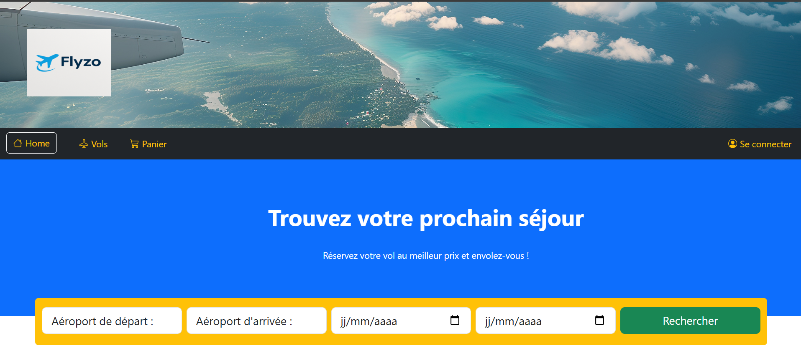

Flyzo est une application web de réservation de vols développée avec Laravel, simulant un système complet de gestion de billets d’avion.
Le système permet aux utilisateurs de rechercher des vols, consulter les disponibilités et gérer un panier de réservation avec gestion des passagers.
Le projet repose sur l’architecture MVC de Laravel avec une base de données SQLite. Les données sont structurées autour des entités principales : vols, passagers et aéroports.
Une interface administrateur a également été implémentée afin de gérer les vols : création, modification, suppression et mise à jour des disponibilités.
L’ensemble du projet suit une logique backend structurée avec séparation des rôles entre utilisateur et administrateur, afin de reproduire un fonctionnement proche d’une application de réservation réelle.